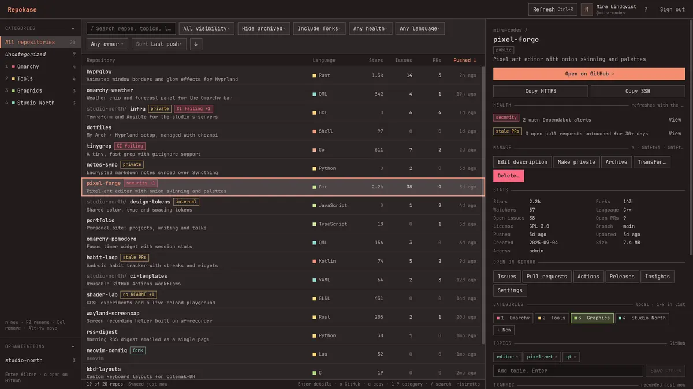
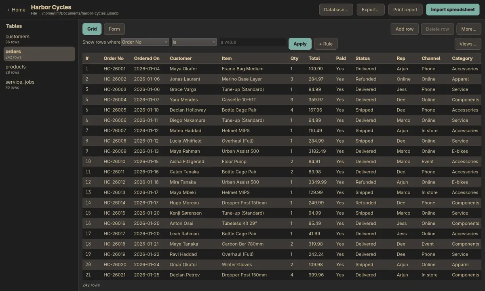
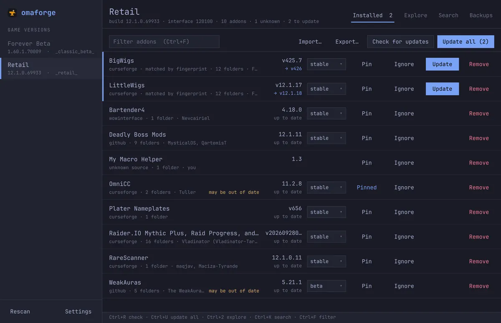
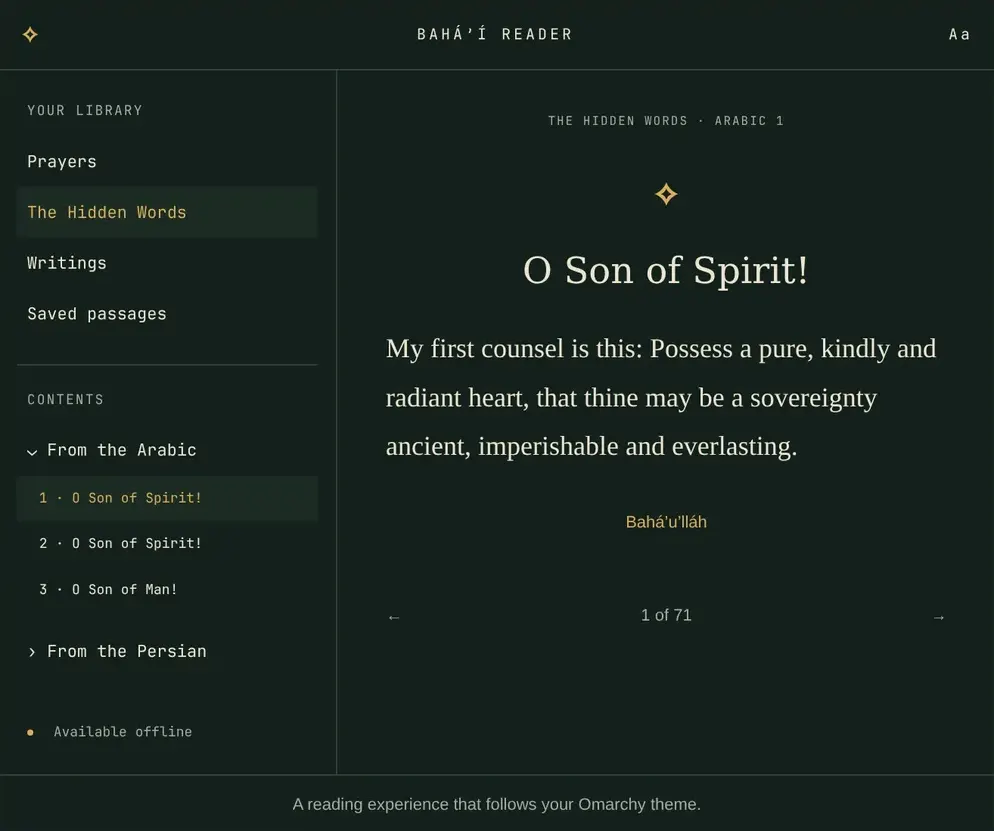
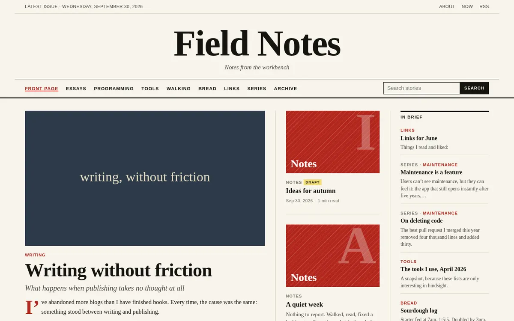

Whitehouse, Texas · Est. by Tim Apple
Small, useful software for Linux, and for people who like to write.
What’s on the bench at Nine Point Labs. Most of it is native to Omarchy, with more bar plugins and themes on the Nine Point Labs for Omarchy hub. Everything except Persistwise is open source on GitHub.
On the desktop
Native apps that follow your Omarchy theme.

Repokase
Your repos, chef’s choice.
Every GitHub repository you own or share, in one keyboard-driven app. CI runs, traffic history, health warnings and bulk actions, without opening the browser.
repokase.ninepointlabs.com

Jubako
A simple database for your own computer.
Like the old Microsoft Access, without the hard parts. Drop in a spreadsheet, work in a grid or a form, print a tidy report. No SQL, no server.
jubako.ninepointlabs.com
Rune
An ODF-first word processor with real .docx round-trips. AI writes into the document itself, not into a sidebar bolted onto old code.
rune.ninepointlabs.com

omaforge
World of Warcraft addons, on Linux.
Finds every WoW client in your Wine and Proton prefixes, including addons it didn’t install. Updates from CurseForge, WoWInterface and GitHub.
omaforge.ninepointlabs.com
Bahá’í Reader
A quiet place for the Writings.
An offline prayer book and Writings reader for Linux. Packages for Arch, Debian, Fedora and openSUSE, plus AppImage and Flatpak. Follows your Omarchy colours live.
bahaireader.org

Hyprfall
Don’t fall in the node_modules.
A jungle platformer native to Omarchy. Swing on ethernet cables over tarballs and anti-AI garden gnomes, and find 32 treasures in 20 minutes. It wears your Omarchy theme.
hyprfall.ninepointlabs.com

In the terminal and the bar
Keyboard first, out of your way.
For writers
Publishing without friction, and keeping it forever.

folderblog
A folder is a blog.
Save a Markdown file into a folder and it’s live seconds later. No front matter, no build step, no deploy command. Themes are plain templates that coding agents can design.
folderblog.ninepointlabs.com
Persistwise
Writing that outlasts the platform.
Keep blogging wherever you already do. Persistwise watches your feeds and archives every new post, so your writing survives even if the platform doesn’t.
persistwise.com
Linkguard
Dead links, found and fixed.
Checks the outbound links in a Jekyll, Hugo or folderblog site. When one has died, it finds a Wayback Machine snapshot and can open a pull request that swaps it in.
linkguard.persistwise.com
StoryTracker
Every adventure, ready to write up.
A World of Warcraft addon that logs your quests, zones, dings, deaths, dungeons and loot as you play, so each session can become a story post. Editions for WoW Forever and Retail.
github.com/ninepointlabs/wow-storytracker-addon